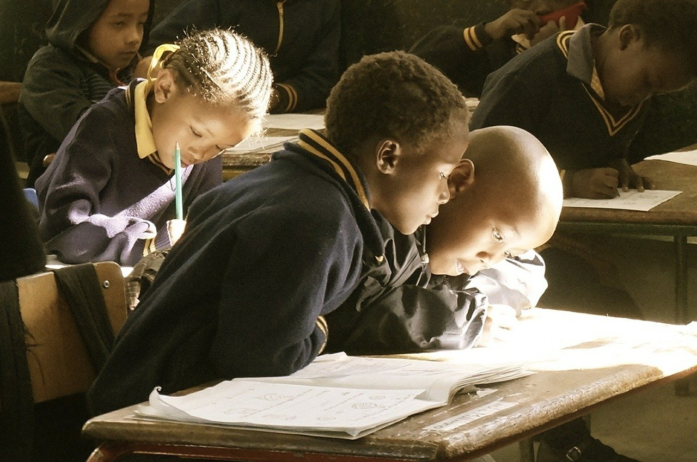

The Issue
More and more children are droping out of school, and the numbers are rising due to covid-19. Neither the school nor the government in the countries knows what´s happening with the childrens who falls of. With our technology we want to make it easier to track children falling out and find out why they are dropping out of school.
Solution - Stay in School
Stay in School is based on a system where the children or parents call in to
a call center that has pre set questions and gives the children information, like a robot voice.
We chose this solution because we found that most people had acess to a simple phone, so the children could
loan their parents, or else someone in their neighbourhood will have one. So its acessisble.
Also, we wanted to use the automatic "call centers" because they would be cheap to make, and the calls would only use
computers and programs to turn the childrens answers into answers.
The automatic voice asks questions like "are you doing your schoolwork today", "How old are you?",
"What is your gender?" and so on. The childrens answers are automatically made to text. The text is made into
data. Information about the personal student is sent to their teachers, so they will be the only
one getting their name and all their information. Data sent to Redd Barna and other authorities will be made more anonymous,
and will act more as a statistical measure to see how students in a specific school or area are doing.
We believe that high focus must be placed on privacy and security for sensitive information. With
restrictive access to individual sensitive data, encryption as well as anonymizing names with
a universal identifier privacy will be maintained. On the other hand we eant larger anonymized statistics
to be available for publishing.
With enough data in SiS, we look to being able to predict and prevent dropouts in schools, worldwide.